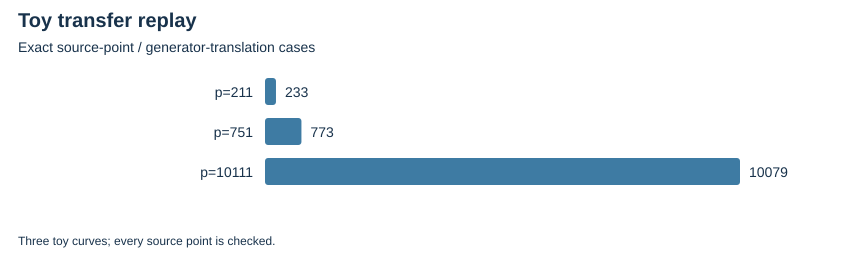

TWIST ROUTES 1–3 · E19 · 2026-10-23 · LOCAL BOUNDED EVIDENCE
The BHLS genus-two construction (arXiv:1403.6911, Algorithm 5.4 and Appendix A) produces four parameter presentations per source, with exact degree-three maps to the original curve and its twist. Presentations are not asserted nonisomorphic.
The three toy sources have actual divisor pullback and norm replay with norm composed with pullback equal to multiplication by three. Every source point, inverse and generator translation is checked. Eight distinct public targets per toy source are solved in the destination subgroup and verified back on the source; public P-521 has no DLP attempt.
| Source | Source points / translation checks | Recovery attempts | Distinct targets |
|---|---|---|---|
| p=211 | 233 | 8 | 8 |
| p=751 | 773 | 8 | 8 |
| p=10111 | 10079 | 8 | 8 |

Polarized identification with each E18 graph, full second-map divisor transfer, balanced base-field arithmetic, formal chart/group bridges and all costs remain open. The construction is prior art, not a novelty claim.
Verified locally on the same host; complete raw publication is pending artifact-store access. No calibrated speedup, novelty, independent-host replay or NIST DLP is claimed. Original acceptance criteria remain open.
Rust 1.90.0, PARI/GP 2.17.2, one worker except the three-cell E25 orchestration; isolation L0. Caps and limits are in each source-frozen protocol and receipt. Counts are exact finite records; no wall time is admitted. Stochastic uncertainty is not inferred from repeated configurations or targets.
| Receipt / phase | UTC start | Exit | Source pin |
|---|---|---|---|
| geometry-P-521-20261023-v1-adjudication.json | 2026-10-23T01:44:27Z | 0 | 4d4218ec3410 |
| geometry-P-521-20261023-v1-verified.json | 2026-10-23T01:44:27Z | 0 | 4d4218ec3410 |
| geometry-P-521-20261023-v1.json | 2026-10-23T01:44:27Z | 0 | 4d4218ec3410 |
| geometry-fp211-20261023-v1-adjudication.json | 2026-10-23T01:43:12Z | 0 | 4d4218ec3410 |
| geometry-fp211-20261023-v1-verified.json | 2026-10-23T01:43:12Z | 0 | 4d4218ec3410 |
| geometry-fp211-20261023-v1.json | 2026-10-23T01:43:12Z | 0 | 4d4218ec3410 |
| geometry-icv1-fp10-tm21-b87c79a9-20261023-v1-adjudication.json | 2026-10-23T01:44:27Z | 0 | 4d4218ec3410 |
| geometry-icv1-fp10-tm21-b87c79a9-20261023-v1-verified.json | 2026-10-23T01:44:27Z | 0 | 4d4218ec3410 |
| geometry-icv1-fp10-tm21-b87c79a9-20261023-v1.json | 2026-10-23T01:44:27Z | 0 | 4d4218ec3410 |
| geometry-icv1-fp14-t33-d98086ae-20261023-v1-adjudication.json | 2026-10-23T01:44:27Z | 0 | 4d4218ec3410 |
| geometry-icv1-fp14-t33-d98086ae-20261023-v1-verified.json | 2026-10-23T01:44:27Z | 0 | 4d4218ec3410 |
| geometry-icv1-fp14-t33-d98086ae-20261023-v1.json | 2026-10-23T01:44:27Z | 0 | 4d4218ec3410 |
| geometry-input-20261023-v1.json | 2026-10-23T01:42:18Z | 0 | 4d4218ec3410 |
| three-transfer-20261023-v1.json | 2026-10-23T02:43:47Z | 101 | f9e5354058c4 |
| three-transfer-20261023-v2.json | 2026-10-23T02:48:10Z | 0 | b6d1fca72060 |
| three-transfer-icv1-fp10-tm21-b87c79a9-20261023-v2-adjudication-stack-v2.json | 2026-10-23T16:06:38Z | 0 | 36ed6603620a |
| three-transfer-icv1-fp10-tm21-b87c79a9-20261023-v2-adjudication.json | 2026-10-23T16:02:16Z | 1 | 465b378e5e78 |
| three-transfer-icv1-fp10-tm21-b87c79a9-20261023-v2-gp.json | 2026-10-23T16:02:16Z | 0 | 465b378e5e78 |
| three-transfer-icv1-fp14-t33-d98086ae-20261023-v2-adjudication-stack-v3.json | 2026-10-23T16:14:25Z | 1 | 36ed6603620a |
| three-transfer-icv1-fp14-t33-d98086ae-20261023-v2-adjudication-stack-v4.json | 2026-10-23T16:16:09Z | 0 | a9035877275c |
| three-transfer-icv1-fp14-t33-d98086ae-20261023-v2-adjudication.json | 2026-10-23T16:06:41Z | 1 | 36ed6603620a |
| three-transfer-icv1-fp14-t33-d98086ae-20261023-v2-gp.json | 2026-10-23T16:06:38Z | 0 | 36ed6603620a |
| three-transfer-icv1-fp8-tm21-71e3bcb7-20261023-v2-adjudication.json | 2026-10-23T02:49:55Z | 0 | b6d1fca72060 |
| three-transfer-icv1-fp8-tm21-71e3bcb7-20261023-v2-gp.json | 2026-10-23T02:49:55Z | 0 | b6d1fca72060 |
Native assessment: ../../execution-v2/assessment-20261023-v3/ASSESSMENT.json. Raw members: runs/geometry-*, runs/three-transfer-20261023-v1 and -v2, and all CAS failures/replays. Source/input/binary hashes and exact argv: E19-receipts.json and ../../execution-v2/receipts/.